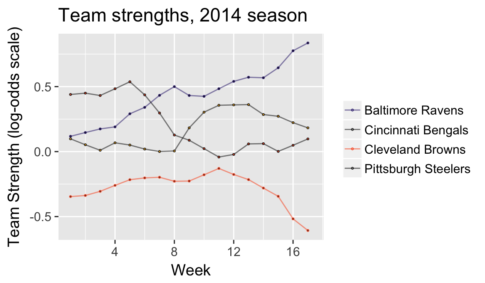
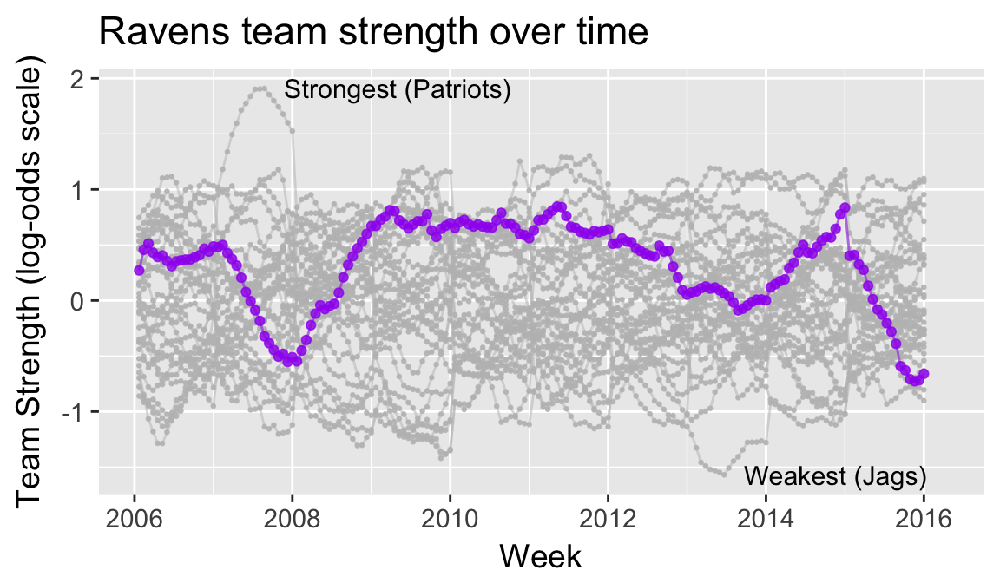
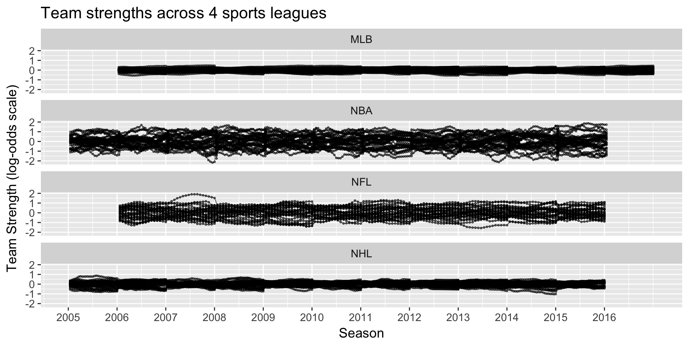
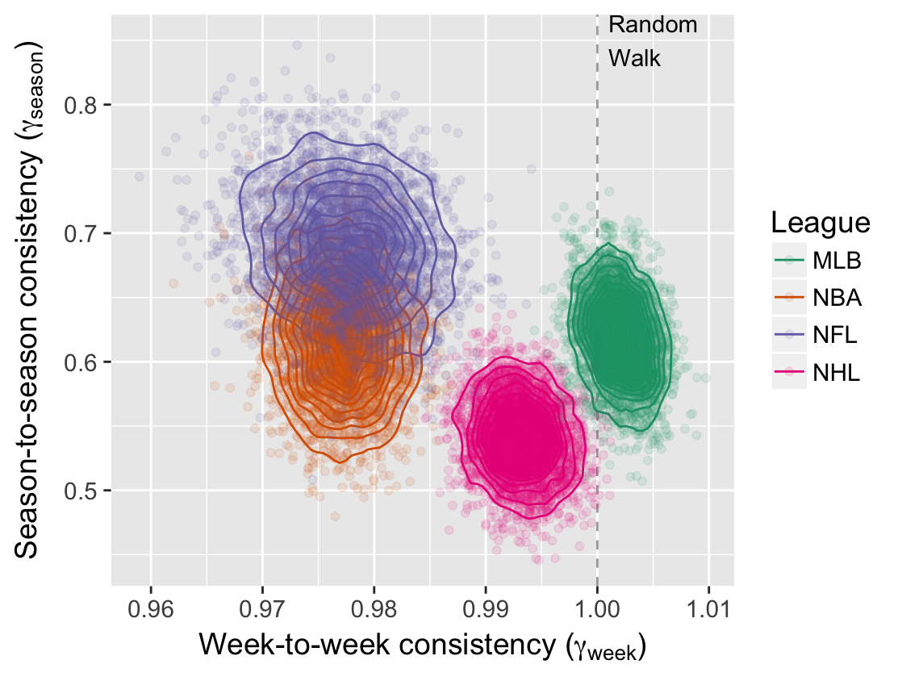
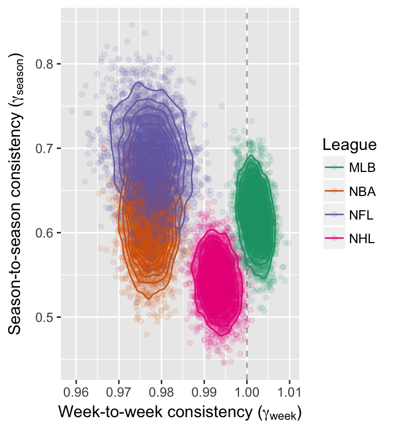
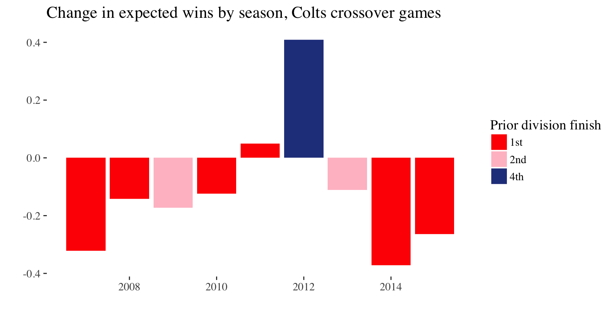
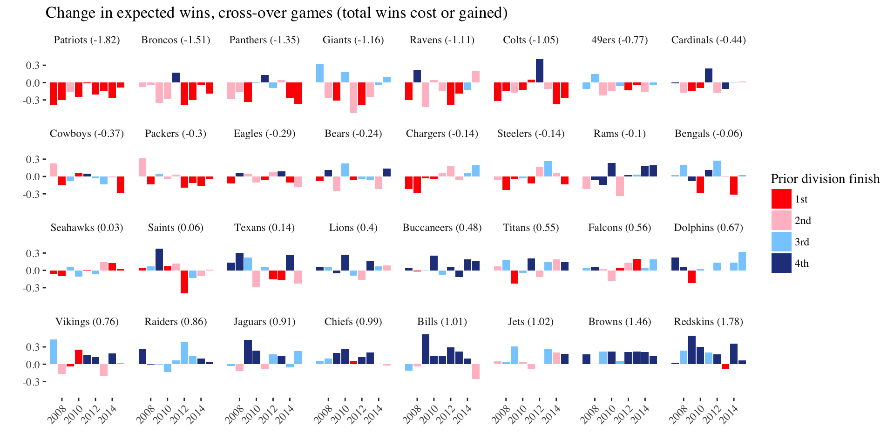
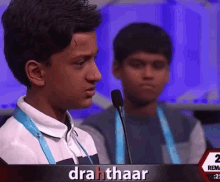
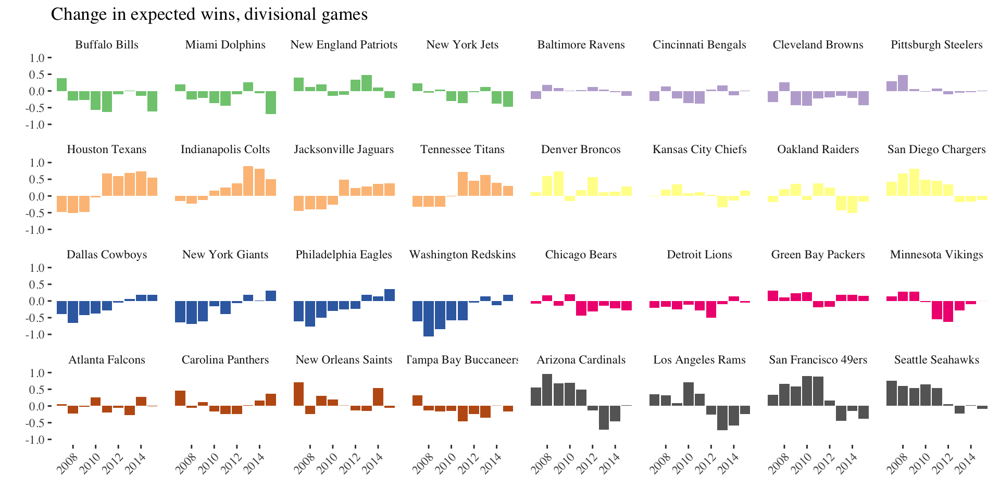

The NFL’s parity paradox
Michael Lopez (with Gregory Matthews, Benjamin Baumer
The NFL’s parity paradox

Michael Lopez, Gregory Matthews, Benjamin Baumer https://github.com/bigfour/competitiveness.
Goals: the NFL’s
There are systems that we have to make sure that we maintain (parity).
Carefully constructed system of competitive balance that makes NFL games and championship races so unpredictable and exciting.
Roger Goodell, NFL commisioner
If you expect something to happen in this league, it’s likely not going to happen.
Jonathan Kraft, President of New England Patriots
Goals: ours
- Develop model to assess parity in professional sports
- Does the NFL have parity?
- How do NFL systems impact league outcomes?
1. Assess parity in professional sports
How to define parity
the state or condition of being equal
1. Assess parity in professional sports
What parity looks like:

1. Assess parity in professional sports
What parity does not look like:

1. Assess parity in professional sports
Parity checklist
- Equality at a fixed time
- Within season equality
- Between season equality

Building a cross-sport model
- \(p_{(q,s,k)ij}\) is probability that team \(i\) will beat team \(j\) in season \(s\) during week \(k\) of sports league \(q\), for \(q \in \{MLB, NBA, NFL, NHL\}\).
- \(\alpha_{q_{0}}\) be the league-wide home advantage (HA) in \(q\)
- \(\alpha_{(q) i^{\star}}\) be the extra effect (+ or -) for team \(i\) when playing at home
- \(\theta_{(q,s,k) i}\) and \(\theta_{(q, s, k) j}\) be season-week team strength parameters
Building a cross-sport model
\[ E[\text{logit}(p_{(q,s,k) ij})] = \theta_{(q,s,k) i} - \theta_{(q, s, k) j} + \alpha_{q_0} + \alpha_{(q) i^{\star}} \]
Assumptions:
- \(\sum_{i=1}^{t_{q}} \theta_{(q,s,k)i} = 0\)
- \(E[\theta_{(i,q,s+1,1)}] = \gamma_{q, season} \theta_{(i, q,s,k)}\)
- \(E[\theta_{(i,q,s,k+1)}] = \gamma_{q, week} \theta_{(i, q,s,k)}\)
- \(\gamma_{q,week}\) and \(\gamma_{q,season}\) week/season level autogressive parameters
Fitting a cross-sport model
Data: 2006-2016 regular season games in MLB, NBA, NFL, NHL via Sports Insights
Priors: Uniform (variance parameters) and Normal (team strength parameters)
Software: rjags package in R statistical software
Draws: 20k iterations, 2k burn in, thin of 5
Team strength results

Team strength results


2. NFL’s parity: equivalence of teams at fixed point in time
How often does the best team win?

2. NFL’s parity: evolution of strength over time

2. NFL’s parity: evolution of strength over time

- NFL matches NBA with low week-to-week consistency
- NFL with highest season-to-season consistency
2. NFL’s parity
Parity checklist
- Equality at a fixed time ❌
- Within season equality ✔️
- Between season equality ❌
3. NFL league characteristics that impact perceived parity
- Small number of games in a season (for a different day)
- Single elimination tournament (for a different day)
- Unbalanced schedule
3. NFLs unbalanced schedule
Games fixed well in advance
- Intra division (6)
- Fixed division vs. division (8)
Games determined based on prior season results
- Intra-conference vs like-placed teams (crossover games, 2)
3. NFLs unbalanced schedule

3. NFLs unbalanced schedule


3. NFLs unbalanced schedule
Final thoughts
- Difference between first and last place appx one-third of a win a year
- Practical significance given 16 game schedule
- Alternative effects: divisional games
- Future work: compare to other sports
Conclusion
Does NFL have parity? Not particularly
- 
Conclusion
Do NFL systems push records to 0.500? Sort of

Acknowledgements: Greg and Ben


Summary: parity in the NFL
- Equality at a fixed time ❌
- Within season equality ✔️
- Between season equality ❌
- Crossover games drive records to 0.500 ✔️
